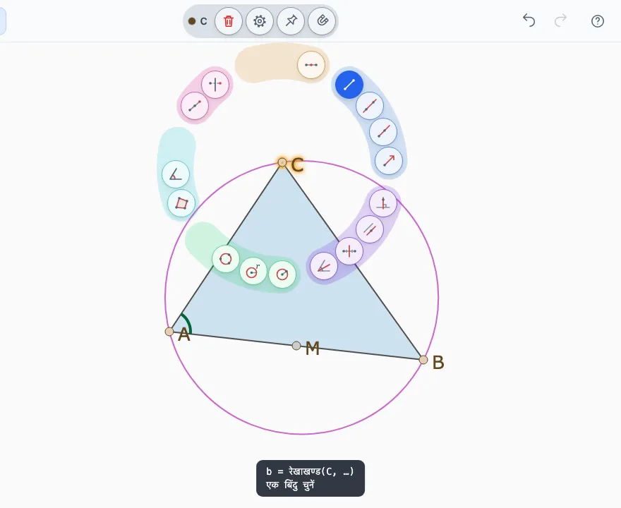

इशारों से रचना
आकृति को छूना
| छुई गई जगह | परिणाम |
|---|---|
| खाली जगह | मुक्त बिन्दु (3D में फ़र्श z = 0 पर) |
| किसी कटान के पास | दोनों ऑब्जेक्टों का प्रतिच्छेद, जो पॉइंटर आने पर चमकते हैं (24 px के भीतर) |
| कोई ऑब्जेक्ट | चयन और उसके टूलों का वलय |
| खाली जगह, वलय खुला होने पर | वलय बंद, कोई बिन्दु नहीं बनता |
पाठ, व्यंजक या स्लाइडर केवल चुने जाते हैं: उनका वलय नहीं होता।
टूलों का वलय

वलय केवल वही टूल दिखाता है जो छुए गए ऑब्जेक्ट पर लागू होते हैं। हर टूल का स्थान हमेशा वही रहता है; लागू न होने वाला टूल अपना स्थान खाली छोड़ता है। परिवार, ऊपर से दक्षिणावर्त:
| परिवार | टूल |
|---|---|
| बिन्दु | ऑब्जेक्ट पर बिन्दु, प्रतिच्छेद, मध्यबिन्दु या केन्द्र |
| रेखाएँ | रेखाखण्ड, रेखा, किरण, सदिश |
| रचनाएँ | लंब, समानांतर, लम्बसमद्विभाजक, कोणसमद्विभाजक |
| वृत्त | केन्द्र और बिन्दु, केन्द्र और त्रिज्या, तीन बिन्दु, गोला (3D) |
| बहुभुज, कोण, बिन्दुपथ | बहुभुज, कोण, बिन्दुपथ |
| रूपांतरण | केन्द्रीय और अक्षीय सममिति |
किसी टूल पर पॉइंटर ले जाने से संकेत में वह पंक्ति दिखती है जो वह
लिखेगा, और अपेक्षित आर्गुमेंट: b = रेखाखण्ड(C, …),
«एक बिंदु चुनें»। ऑब्जेक्ट पर ही की जाने वाली क्रियाएँ (हटाना,
सेटिंग…) बार के
संदर्भ क्षेत्र
में हैं।
आर्गुमेंट चुनना
टूल चुनने के बाद, ऑब्जेक्ट का पूर्वावलोकन पॉइंटर के साथ चलता है और स्वीकार्य ऑब्जेक्ट पॉइंटर आने पर चमकते हैं। जहाँ बिन्दु अपेक्षित हो, वहाँ आप कोई मौजूदा बिन्दु, कोई ऑब्जेक्ट (ऑब्जेक्ट पर बिन्दु बनता है), कोई कटान (प्रतिच्छेद बनता है) या खाली जगह (मुक्त बिन्दु बनता है) चुन सकते हैं।
- बहुभुज: शीर्ष, फिर पहला शीर्ष दोबारा।
- वृत्त (केन्द्र और त्रिज्या): एक क्लिक से बनता है, त्रिज्या लगभग 150 px, दो अंकों तक पूर्णांकित; वृत्त को खींचने से त्रिज्या बदलती है।
- बिन्दुपथ: ऐसे बिन्दु पर प्रस्तावित जो ऑब्जेक्ट पर किसी बिन्दु पर निर्भर है; एक क्लिक से बनता है।
- कोण और कोणसमद्विभाजक: पहली भुजा का एक बिन्दु, शीर्ष, दूसरी भुजा का एक बिन्दु।
विशेष स्थितियाँ
- एक-दूसरे पर पड़े ऑब्जेक्ट: एक मेनू हर एक की पंक्ति देता है; उस पर पॉइंटर ले जाने से ऑब्जेक्ट चमकता है। बिन्दु को हमेशा प्राथमिकता मिलती है, और कटान सीधे प्रतिच्छेद देता है।
- उँगली से: टूल के दौरान दबी हुई उँगली कुछ खिसकाए बिना पूर्वावलोकन दिखाती है और उठाने पर चुनती है। आप आइकन दबाकर एक ही इशारे में लक्ष्य तक सरका सकते हैं।
- विंडो का किनारा: वलय पूरा दिखने के लिए खिसक जाता है और बिन्दुदार रेखा से ऑब्जेक्ट से जुड़ा रहता है; आकृति हिलने पर वह ऑब्जेक्ट के साथ चलता है।
- छोड़ना: Esc या संकेत का ✕।
- खिसकाना: टूल के दौरान खींचना निशाना साधता है; दायाँ बटन हमेशा ऑब्जेक्ट और दृश्य खिसकाता है।